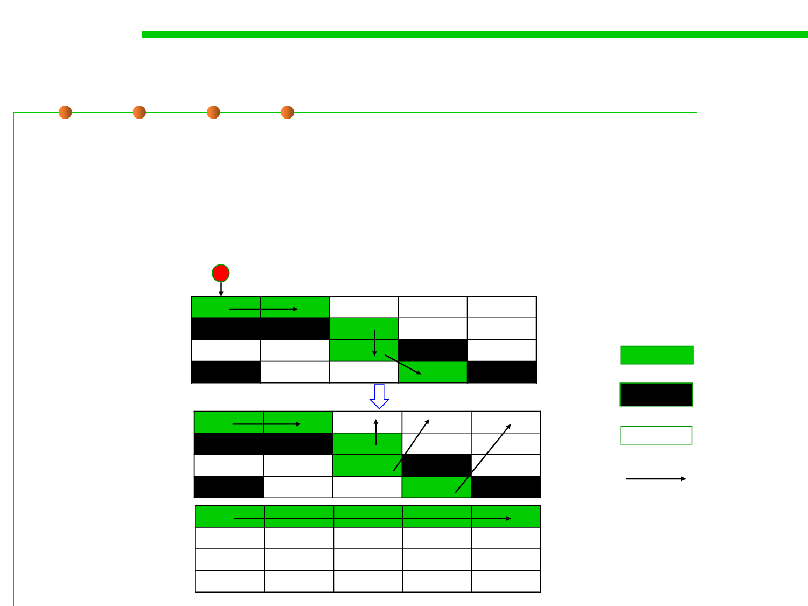

8.1 Metrics, Principles, and Methods of Construction for Performance
Mark-Compact
▪ Mark-Compact:
– Put notes on objects you need (as Mark-Sweep).
– Move anything with a note on it to the back of the garage.
– Burn everything at the front of the garage (it’s all dead).
root
After GC
live
garbage
free
reference